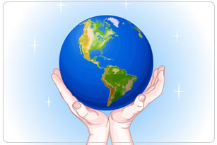
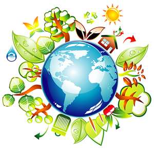

Dia Internacional de la madre Tierra


- 

- 


4°semestre grupo "G"
programacion
Desarrola aplicaciones moviles
Lic.José Antonio Gómez Hernández
Celebramos el dia internacional de la madre tierra para recordar que el planeta y su ecosistemas nos dan la vida y el sustento. Con este dia, asumimos, ademas, la responsabilidad colectiva, com nos recordaba la declaracion de rio de 1992, de fomentar esta armonia con la naturaleza y la madre tierra.
El Día de la Tierra es una manifestación más de nuestra naturaleza. Una celebración del respeto que le tenemos al planeta a pesar de los errores que cometemos durante nuestra existencia. Esta es su historia.
celebralo este 22 de abril
Madre Tierra es una expresión común utilizada para referirse al Planeta Tierra en diversos países y regiones, lo que demuestra la interdependencia existente entre los seres humanos, las demás especies vivas y el planeta que todos habitamos. La Tierra y sus ecosistemas son nuestro hogar. Para alcanzar un justo equilibrio entre las necesidades económicas, sociales y ambientales de las generaciones presentes y futuras, es necesario promover la armonía con la naturaleza y el planeta. Celebramos el Día Internacional de la Madre Tierra para recordar que el planeta y sus ecosistemas nos dan la vida y el sustento. Con este día, asumimos, además, la responsabilidad colectiva, como nos recordaba la Declaración de Río de 1992, de fomentar esta armonía con la naturaleza y la Madre Tierra.
El 23 de abril de 2018 se realizó en la sede de las Naciones Unidas en Nueva York, el 8° Diálogo Interactivo sobre Armonía con la Naturaleza, en ocasión de la conmemoración del Día Internacional de la Madre Tierra. El evento fue convenido por el Presidente de la Asamblea General, Miroslav Lajcak, quien destacó la importancia del Diálogo para intercambiar ideas sobre desarrollo y patrones de producción y consumo sostenibles en armonía con la naturaleza.

En diciembre de 2009 la Asamblea General aprobó la resolución 64/236, en virtud de la cual decidió organizar la Conferencia de las Naciones Unidas sobre el Desarrollo Sostenible. Esta Conferencia se realizará en Río de Janeiro (Brasil) en junio de 2012, 20 años después de la Conferencia de las Naciones Unidas sobre el Medio Ambiente y el Desarrollo, conocida como Cumbre para la Tierra, y constituye una oportunidad histórica para hacer un balance de lo sucedido en estas dos décadas, evaluar los advances logrados y las dificultades encontradas y explorar nuevas formas de cooperación que permitan acelerar la transición hacia un desarrollo sostenible. Los Estados Miembros han acordado analizar dos temas principales para la Conferencia: a) una economía verde en el contexto del desarrollo sostenible y la erradicación de la pobreza y b) el marco institucional para el desarrollo sostenible.El documento que presentamos está dividido en dos partes: por un lado se evalúan los advances logrados y las dificultades encontradas en América Latina y el Caribe en la implementación de los compromisos mundiales sobre el desarrollo sostenible desde 1992 y, por otro, se proponen lineamientos para transitar hacia un desarrollo sostenible en la región.La aceptación del concepto de desarrollo sostenible por parte de la comunidad internacional, divulgado ampliamente a través de la Declaración de Río sobre el Medio Ambiente y el Desarrollo, fue un gran logro de la Cumbre para la Tierra de 1992. Sin embargo, 20 años después, si bien se han alcanzado grandes progresos, aún no se logra un cambio en el modelo de desarrollo que permita avanzar simultánea y sinérgicamente en las dimensiones social, económica y ambiental del desarrollo.La necesidad de transitar hacia un nuevo modelo de desarrollo, que tenga el valor de la igualdad en el centro de sus acciones y que sea capaz de ir adelante en forma simultánea con el desarrollo social, el crecimiento de la economía y la sostenibilidad ambiental pone a la región y al mundo ante un imperative de cambio. El desarrollo no puede seguir perpetuando la pobreza y la desigualdad, ni deteriorando permanentemente los recursos naturales y los ecosistemas. Existe ya una irrefutable evidencia que demuestra que la protección de los ecosistemas y de sus servicios redunda en la calidad de las condiciones de salud, de integridad física, de seguridad alimentaria y de otros aspectos básicos para la seguridad humana y para el bienestar de las personas y las comunidades.Un problema reiterado y transversal es la resistencia o incapacidad para considerar plenamente todos los costos de la actividad económica en las políticas, normas y decisiones de inversión. De ahí la multiplicidad de externalidades negativas ambientales y de salud, origen de casi la totalidad de la problemática ambiental. Agravadas dichas externalidades por las altas tasas de descuento de la inversión, una parte importante de los costos de la actividad económica recae inequitativamente sobre los más vulnerables de esta generación y sobre las generaciones futuras.La propuesta de las Naciones Unidas para reflexionar sobre una "economía verde, en el context del desarrollo sostenible y la erradicación de la pobreza", aspira a catalizar los cambios requeridos en la región. Según el principio de las responsabilidades comunes pero diferenciadas, la economía verde se entiende en oposición a una economía marrón, que parcializa, contamina, excluye y destruye. Una economía verde es aquella que incrementa y privilegia el bienestar humano y la equidad social, a la vez que reduce significativamente los riesgos ambientales y las escaseces ecológicas.Con esta propuesta se intenta rediseñar las políticas públicas específicas para fomentar un desarrollo bajo en carbono, resiliente a los desastres y al cambio climático, crear empleos verdes e integrar en las decisiones los costos y beneficios económicos asociados al uso de los servicios y materiales de los ecosistemas. En una economía para el desarrollo sostenible se requiere reducir los impactos ambientales negativos, como las emisiones de carbono y la contaminación, a la vez que promover la eficiencia en el uso de la energía y de los recursos y evitar la pérdida de diversidad biológica y de los servicios de los ecosistemas, logrando mejorar el bienestar de los ciudadanos presentes y futuros.Los acuerdos internacionales, sean globales o regionales, pueden y deben contribuir a estos objetivos, favoreciendo un entorno propicio e incentivos que garanticen una mayor inclusión social, un acceso e intercambio justos y sostenibles de bienes y servicios de los ecosistemas y el cuidado de los bienes públicos ambientales globales.Este informe fue elaborado bajo la coordinación de la Comisión Económica para América Latina y el Caribe (CEPAL), como titular del Mecanismo de Coordinación Regional, en estrecha colaboración con las oficinas regionales de los demás organismos del sistema de las Naciones Unidas, en particular con el Programa de las Naciones Unidas para el Medio Ambiente (PNUMA), el Programa de las Naciones Unidas para el Desarrollo (PNUD), el Fondo de Población de las Naciones Unidas (UNFPA), la Organización de las Naciones Unidas para la Alimentación y la Agricultura (FAO), el Programa de las Naciones Unidas para los Asentamientos Humanos (ONU-Hábitat), la Organización de las Naciones Unidas para la Educación, la Ciencia y la Cultura (UNESCO), la Entidad de las Naciones Unidas para la Igualdad entre los Géneros y el Empoderamiento de las Mujeres (ONU-Mujeres), el Fondo de las Naciones Unidas para la Infancia (UNICEF), la Oficina del Alto Comisionado de las Naciones Unidas para los Derechos Humanos (ACNUDH), el Programa Conjunto de las Naciones Unidas sobre el VIH/SIDA (ONUSIDA), el Centro de las Naciones Unidas para el Desarrollo Regional, el Programa Mundial de Alimentos (PMA), la Organización Panamericana de la Salud (OPS), la Oficina de las Naciones Unidas de Servicios para Proyectos (UNOPS), la Organización Internacional del Trabajo (OIT), la Organización Mundial del Turismo (OMT), la Conferencia de las Naciones Unidas sobre Comercio y Desarrollo (UNCTAD), el Mecanismo Mundial de la Convención de las Naciones Unidas de Lucha contra la Desertificación, y el Programa de ONU-Agua para la Promoción y la Comunicación en el marco del Decenio y la Estrategia de las Naciones Unidas para la Reducción de Desastres (EIRD).Confiamos en que este documento estimule e informe los debates sobre el desarrollo en América Latina y el Caribe y ayude a generar un renovado compromiso político con el desarrollo sostenible y el establecimiento de metas que nos permitan avanzar como región y contribuir a un desarrollo más equitativo y sostenible. Alicia BárcenaSecretaria EjecutivaComisión Económica para América Latina y el Caribe (CEPAL)Coordinadora del Mecanismo de Coordinación RegionalHeraldo MuñozAdministrador Auxiliar y Director Regional para América Latina y el Caribe del Programa de las Naciones Unidas para el Desarrollo (PNUD)Coordinador del Grupo Regional de las Naciones Unidas para el Desarrollo